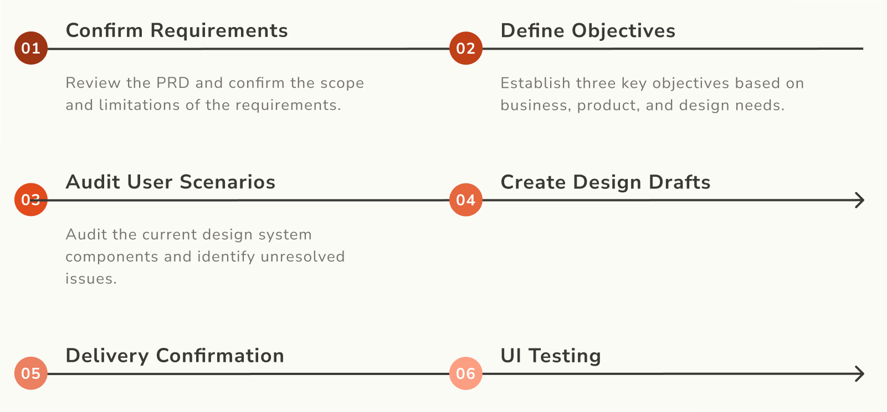
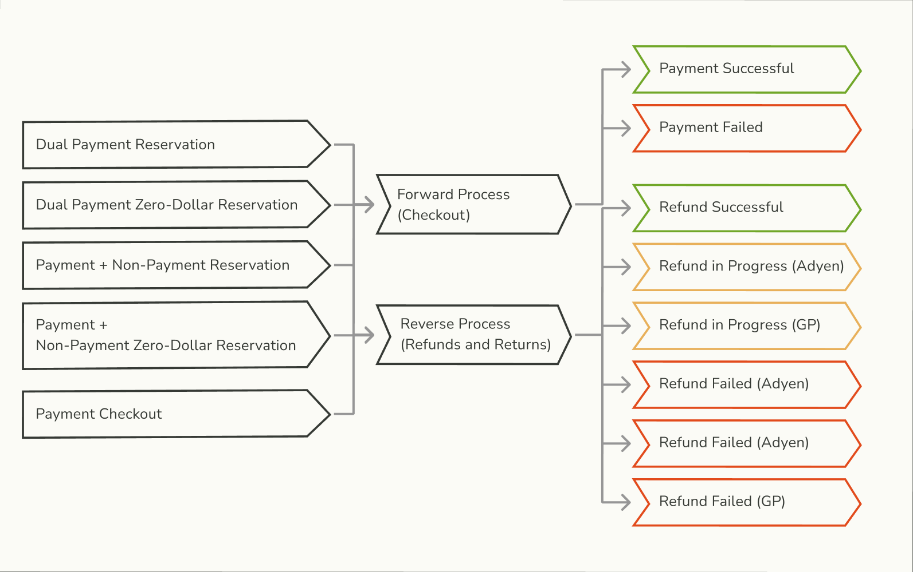
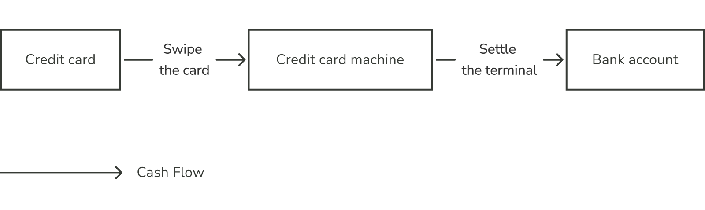
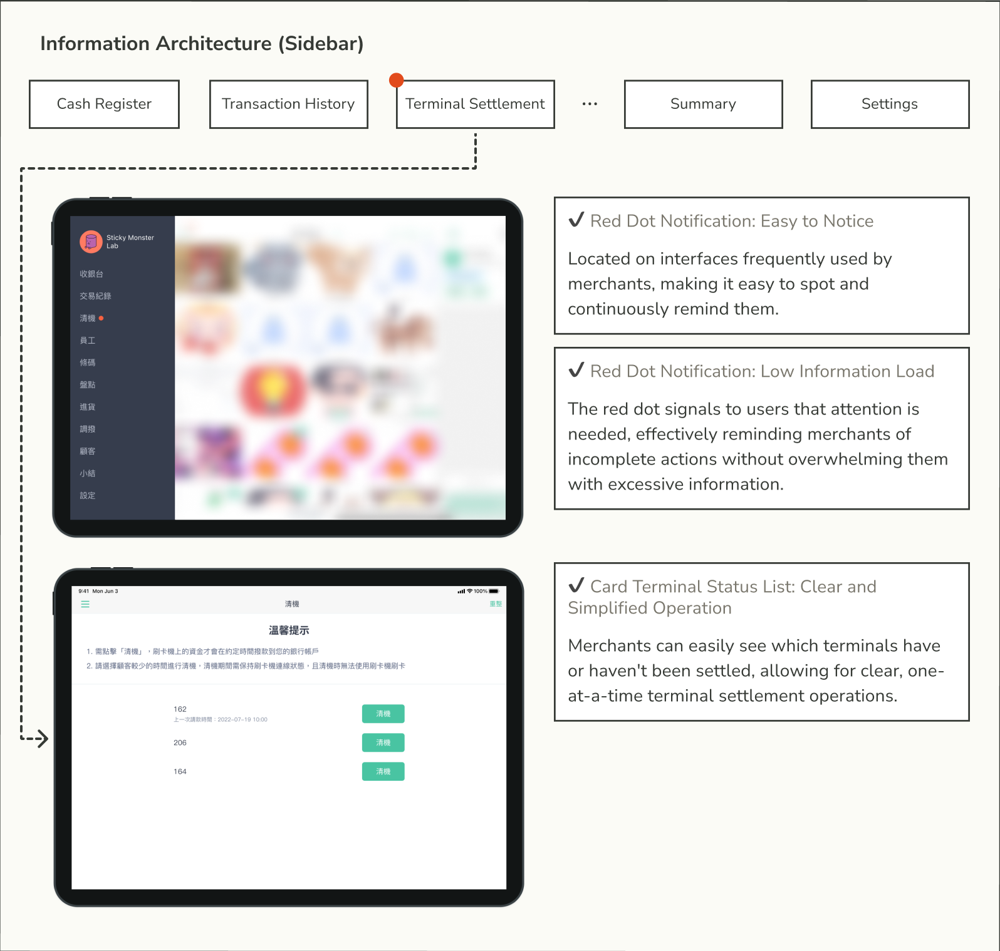
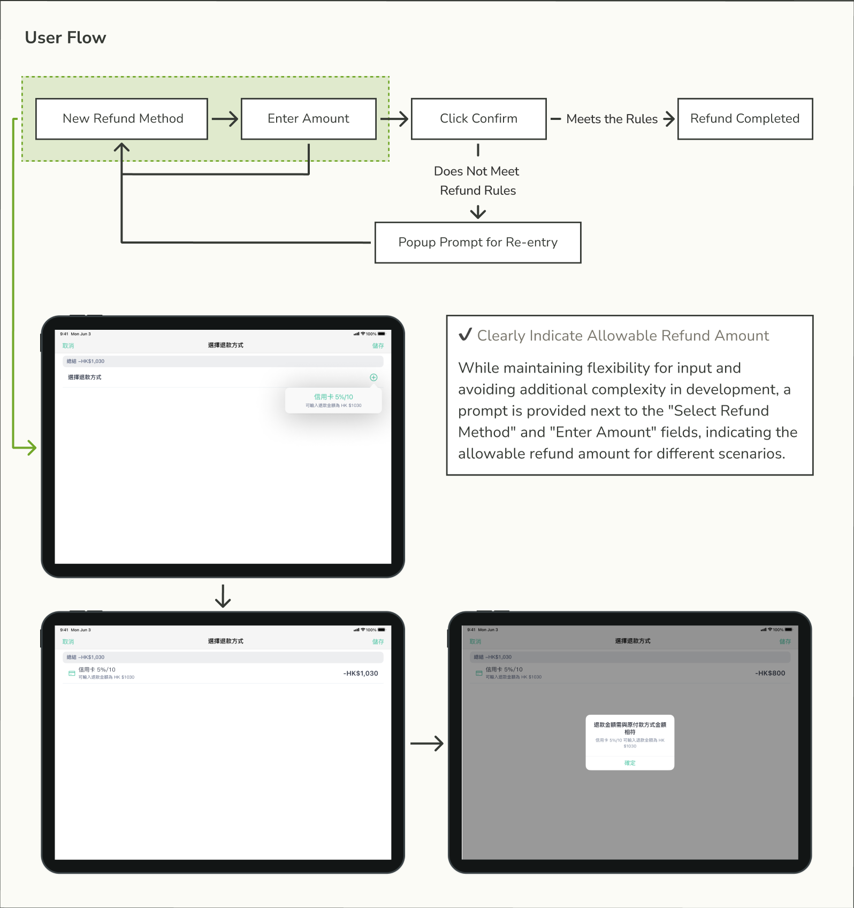

Business GoalIncrease SHOPLINE Payment Revenue
Increase the number of orders using SHOPLINE Payment to boost credit card transaction fee income.
SHOPLINE is an e-commerce platform that integrates online and offline sales, offering a POS system to help merchants manage payment processes in physical stores.
At the time of this project, SHOPLINE's POS system in Taiwan had not integrated its own payment service, requiring merchants to contract with banks directly. In Hong Kong, although payment integration was completed, multiple card terminal brands needed support, and fees remained higher than the market average.

No Payment Integration, Reducing Product Competitiveness
In the Taiwan market, the lack of card payment integration means merchants using SHOPLINE services must handle credit card payments separately, which decreases checkout efficiency.
Higher-than-Average Pricing, Hindering Business Promotion
In the Hong Kong market, the current card terminal payment cost is higher than the market average, making it difficult to promote and adopt the POS system.
Increase the number of orders using SHOPLINE Payment to boost credit card transaction fee income.

Deliver a full suite of SHOPLINE Payment services (checkout, cancellation, refund, returns) to enable merchants to offer credit card payment options to consumers.
Ensure that merchants can quickly complete the payment process while effectively resolving errors to prevent prolonged customer wait times.

Evaluate the POS payment architecture by reviewing transaction timing, status synchronization, and refund handling across various transaction rules and outcomes. Payment flows required special attention, as inconsistent or delayed statuses directly affected how clearly the system could communicate results to users.
After a card transaction, the funds are not immediately transferred to the merchant's account; a manual terminal settlement is required. Therefore, when adding the card terminal settlement feature, we need to clearly remind merchants to complete the settlement.

Design Focus: Ensure that important actions are promptly communicated to merchants without adding informational overload.
As a key feature for merchant payments, I designed a separate 'Settlement' tab with a red dot notification for incomplete settlements. Upon entering the page, merchants can quickly check the status of each card terminal and complete the settlement one terminal at a time.

In the refund process, different payment methods and card terminal types have various refund restrictions (e.g., full refunds only or partial refunds). Without clear prompts for the applicable refund option, merchants may waste time with unnecessary attempts. Therefore, the system must preserve input flexibility while preventing incorrect actions to ensure a smooth customer experience during refunds.

Design Focus: Remind and prevent merchants from entering incorrect refund amounts without affecting operational efficiency.
I added refund amount prompts in the 'Select Refund Method' and 'Refund Method List' sections, and displayed the correct amount again in case of an error to assist merchants in completing the refund process.


Taipei City Childcare Registration and Lottery System Redesign